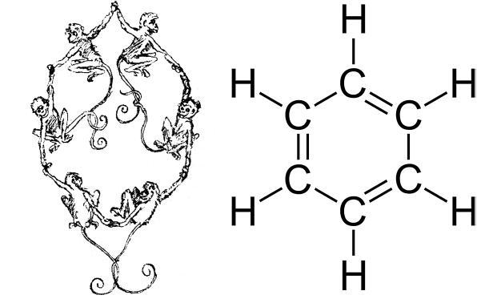
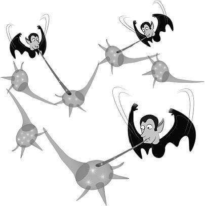

第11章 记忆技巧多多益善
打造生动形象的比喻或类比
在数学和科学的学习中，如果你除了想记住概念，还想理解概念，一个上策就是为它量身打造一个比喻或类比，而且，通常这个类比越形象，效果越好。[1]比喻就是让一件事和另一件事之间显得大同小异。简单来说，你的地理老师是不是说过叙利亚的形状就像碗麦片？或者提到约旦时就让你想想耐克乔丹运动鞋？如果这样记忆，估计你几十年都忘不掉。
所以，如果你想明白什么是电流，不妨把它看作水流。电压也一样，你会“感觉”它和压力有点像。于是你看见电压把电流推向目的地，就像机械泵在物理压力下把真正的水推出去一样。随着学习不断进展，你需要理解更复杂的电学概念，或者你正学着别的什么科目，你都可以对这些比喻或类比做出修改，甚至抛弃已有，重新造出更有意义的比喻。
如果你正努力理解微积分里极限的概念，可以想象一位运动员正朝着终点线奔去。离终点越近，他就跑得越慢。如果用慢镜头来拍，他永远也无法真正撞上终点线。就像我们无法真正得到极限值一样。顺便说一句，西尔瓦诺斯·汤普森（Silvanus Thompson）的小书《轻松学习微积分》（Calculus Made Easy）帮一届届学生掌握了这门课。有时，教科书会太注重所有的细枝末节，反而让你无法以高屋建瓴的视角看清最重要的宏观概念。但像《轻松学习微积分》这类书会让人很容易读进去，因为它让我们专注简单方式解决最重要的问题。
往往有个管用的做法，是把自己当成那个让你苦心钻研的概念。想象你乘坐着一个电子，它就像暖呵呵毛茸茸的拖鞋，带着你从铜板的一面挖个小洞钻到另一面；或者你偷偷溜进一个代数方程的未知数x，就像钻进兔子洞，你从洞里探出了脑袋（别一不小心“用零整除”炸掉了你的兔子洞）。
月光点亮的学习梦境
我总是在睡觉之前学习。不知道为什么，我总是能梦到自己刚刚学过的知识。大多数时候，这些“学习梦境”都相当奇怪，但它们很有用。比如，如果我最近在上运筹学课，就会梦见自己在节点之间来回奔跑，亲身演示最短路径算法。大家觉得我走火入魔了，但我觉得这超棒，我不用花别人那么多功夫去学习就能做到同样的事。我觉得这些梦和我潜意识中的比喻或类比有关系。
——安东尼·休托（Anthony Sciuto）
工业与系统工程大四学生
在化学中，你可以把阳离子比作伸爪子的猫，它就是“阳性的”（“pawsitive”发音与表示阳性的形容词“positive”发音相近）；而阴离子就比喻成洋葱，它会让你哭，所以是“阴性的”（“negative”在化学中表示阴性的，指心情时表示负面的）。
从来没有能面面俱到的比喻，但所有的科学模型也只不过是一种类比，这就意味着它们在某种特定意义下也不成立。[2]但这不碍事，类比（还有模型）之所以重要，是因为对数学和科学概念或过程背后的核心观点，它能让你获得直观形象的理解。有趣的是，比喻和类比在帮我们摆脱定式效应（我们之前提到过，指你困在一个错误的解决问题思路上）上也有不小功劳。举个例子，多道低强度射线可以有效摧毁癌症肿瘤也许不好理解，但换个角度想想，士兵从不同方向同时袭击一个堡垒呢？[3]这就可以帮学生打开思路了。
比喻或类比还可以让概念牢牢留在脑海中，因为它们把新概念和已有的神经结构联系在了一起。这有点像用描图纸描画图样，比喻和类比至少让问题变得有迹可循。如果有时你想不出任何比喻或类比，就在手中拿支笔，再在面前放张纸，写写画画都可以，不过一两分钟的随手勾写，你就会收到意想不到的惊喜。
科学中的比喻和形象化的想象

比喻和想象就是要让某个概念栩栩如生地浮现在眼前，在推动科学和工程领域的进步上，它们功不可没。[4]在19世纪，化学家开始对分子的微观世界进行猜想，并对其形象化之后，化学领域的进步可谓突飞猛进。这张有趣的插图中，猴子构成了苯环的结构。这张插图曾刊印在德国化学学术生活1886年的一篇圈内调侃文章中。[5]注意，单键是用猴子的爪子代表的，双键位置则是它们的尾巴。
间隔重复有助于向记忆存储概念
集中注意力能把一些东西送入临时性的工作记忆，但想让这个“东西”从工作记忆转移到长期记忆，有两个前提：它应当是便于记忆的［我的沙发上有一只飞天（flying）大驴（mule）嚷嚷着F=ma），而且还要得到多次重复才行，否则，你的自然生理代谢过程就会像贪吃的小吸血鬼，把最新形成、还不明显的联结模型一扫而光。这些专门清扫暗淡模型的小吸血鬼其实不坏，因为我们身边的大多事情都无关紧要，如果全记在脑子里，你就会像个守财奴，让自己深陷在回忆的垃圾山中。

所以，如果你无心去重复要记的内容，那些“代谢吸血鬼”就会趁新记忆还不够牢固时把它们吸走。
重复至关重要，甚至让你难忘的事，也要通过重复让它们牢牢驻守在长期记忆中。但该重复多少次才好呢？再者，隔多久重复一次才比较好呢？[6]而且有什么技巧可以使重复过程的效果更显著吗？
研究给了我们启发，让我们举个实际例子。比如，你想记住有关密度的知识——密度的符号是写法奇特的ρ，读作“rou”，它是以标准单位“千克每立方米”来测量的。
你怎样才能便捷有效地把它封存在记忆中呢？（尽管你知道，把小信息组块存入长期记忆有助于逐步形成对一个学科的宏观认识。）
你可能会找一张索引卡，在一面写上“ρ”，在另一面写上其他信息。书写会把要学的知识编译（将信息转换为神经记忆结构的一部分）到你更深的记忆中。当你写出“千克每立方米”时，你可能对1千克会有一个模糊的感受（单纯感受一下它的质量）：这1千克就藏在长宽高刚好1米的大号行李中。要记忆的内容被你变得越好记，再回想就越容易。你也会通过大声读出这个词和词义，让听觉神经联结到材料内容上去。
接下来，看着卡片上写有“ρ”的这一面，试着想起另一面都写了些什么。如果想不起来，翻过卡片提示自己一下。如果想起来了，那就把它放到一边。
现在去做点别的，也许可以准备另一张卡片考考自己。攒了几张卡片之后，试着从头到尾过一遍，看看自己是不是都记得。（这能帮你进行穿插式的学习。）如果有点吃力，也别大惊小怪。只要你把卡片顺利地过了一遍，就把它们放在一边。等到睡前再拿出来看一遍。要记住，你的大脑在睡眠中会不断重复神经模式，并整理拼凑解决方案。
你可以把需要记忆的内容简要重复几天，可以是每天早上或晚上的几分钟，偶尔要记得改变一下卡片顺序。随着记忆逐渐深刻，延长重复的间隔时间。越发熟练的你通过延长时间间隔，把这些内容牢固地封存在脑海中。[7]（Anki翻卡系统已经内置了随机重复算法，可进行从几天到几个月不等的重复。）
有趣的是，记住人名最好的办法之一就是在你第一次听到这个名字后，一次次延长回忆名字的重复间隔。[8]不去复习的内容，更容易缩水是被你直接忘掉。你的代谢吸血鬼会吸走记忆间的联结。这就是为什么考前复习时要慎重决定跳过某些内容，那些与考试相关却没复习过的内容会成为你的障碍。[9]
间隔重复：对学生和教授一样管用
我一直建议我的学生用几天或是几周时间做间隔重复，不光是在我的分析课程中要这么做，我的古典工程史课程也一样。要想记住那些奇怪的名词术语，最好的办法就是重复练上好几天。实际上，我就是这样备课的——有好几天，都会留一段时间大声重复那些术语，这样在课堂上它们就会脱口而出。
——费边·哈迪普瑞诺·谭（Fabian Hadipriono Tan）
俄亥俄州立大学，土木工程学教授
该你试试了！
创造有益学习的比喻
想出一个你正在学的概念。在截然不同的领域里是否存在另外的过程或观点，和你现在所学的这个概念有多多少少的相似之处？能不能想出这么个比喻来。（要是听起来还有点傻，更会给你加分哦！）
创建意群
记忆的另外一个关键就是创造意群，它能简化学习内容。比如你要记忆四种可以驱赶吸血鬼的植物：大蒜、玫瑰、山楂和芥末。四个单词的首字母简写连起来就是GRHM，所以你只要记住GRAHAM牌全麦饼干就好。（这样每次回想这四样东西的时候，只要在记忆宫殿的厨房餐桌上找到全麦饼干，再扔掉它名字里的元音字母就搞定了。）
至于数字，把它们和难忘的事件联系在一起会更好记。比如，1965年可能是你某个亲戚的出生年份，或者也可以把数字和你熟悉的计数系统联系在一起。比如，11.0秒是百米短跑里的好成绩，而75也许是编织一顶滑雪帽的起针针数。个人来说，我喜欢把数字和特定年龄的感受联系在一起。数字18就很好记，那是我离开家闯世界的年纪。如果是104，那时的我大概会是个幸福的曾祖母。
另外，很多学科会有帮学生记住概念的背诵口诀，口诀中每个单词的首字母也是你要记的另一个单词列表中每个单词的首字母。医学领域就是例子，遍地都是记忆口诀。例如，“来自得州的老人吃蜘蛛”（作者原话“Old People from Texas Eat Spiders”的大写首字母是指颅骨的几块骨头，它们分别是Occipitale、Parietale、Frontale、Temporale、Ethmoidale、Sphenoidale）。
另一个例子是十进制中的逢十进位法：“亨利王在喝巧克力奶时死去”（King Henry died while drinking chocolate milk）可以这样解读首字母：国王（king—kilo—1000）；亨利（Henry—hecto—100）；死（died—deca—10）；“在……时”（while—one—1）；喝（drinking—deci—0.1）；巧克力（chocolate—centi—0.01）；牛奶（milk—milli—0.001）。
这些记忆法经过时间的考验，证实了自己的效用。如果你是在背诵一些普遍为人所用的内容，完全可以去网上搜索一下，看是否有人已经想出了独特的记忆窍门。如果没有也没关系，自己来想一个吧。
别把记忆窍门与真正的知识混为一谈
化学里有这么一种说法“skit ti vicer man feconi kuzin”，节奏很像说唱音乐。它代表的是元素周期表里过渡金属元素的第一排（钪、钛、钒、铬、锰、铁、钴、镍、铜、锌）。其他过渡金属元素也还有别的记忆窍门。比如，学生要记住银、金和铜是一族的，可以想着它们都可以用来铸币。
可问题是，有些学生却以为，认为它们都能铸币所以同处一族。但实际是因为它们的化学性质和原子价相似。
这就是学生有时把记忆窍门当作知识本身的典型例子。一定要警惕，分清楚什么是事实，而什么只是帮助记忆的比喻或类比。
——威廉·彼得罗（Willian Pietro）
化学教授，任教于安大略州多伦多市的约克大学
编故事
注意到了吗？我们之前提到的意群往往构造出了一个故事背景，哪怕它的内容很短。可怜的亨利王就根本不该去喝巧克力牛奶！广义上的“讲故事”一直都是理解和储存信息的重要方式。约克大学科学技术史的教授维拉·帕弗拉就告诉她的学生，别把上课就当上课，要把每节课看作有情节、人物和整体主旨的故事。最精彩的数学、科学课堂常常像一场惊悚电影——以引人入胜的问题开场，而你必须探个究竟。如果你的导师或课本没在学习材料后留下思考问题，那就自己找找有没有要解决的问题，然后动手解决它，[10]而且在编记忆诀窍的时候，别忘了编故事也很重要。
动笔写写
3每当学生来找我，我强调的第一件事，就是你的手脑之间有直接的联系，通过重写及梳理笔记，大量信息被分解为小而易懂的组块，这个过程很关键。很多学生喜欢在Word文档或者是PPT上写笔记，每次他们遇到困难，我都会先说：别打字，动手写。毫无例外，在动笔之后，他们在接下来的学习板块中有了更好的表现。
——杰森·德尚（Jason Dechant）
课程主任，匹茨堡大学护理学院，健康促进及发展系
肌肉记忆
我们之前提到过，把内容手写在卡片上有助于强化记忆。尽管这一领域的研究几近空白，[11]但许多教育者都观察到了一种现象，即有一种肌肉记忆似乎和动手书写有关。例如，第一次看某方程式，从中你几乎看不出任何端倪。但如果你有所思考地把它在纸上写上几遍，好神奇，这个方程在你脑海中变得鲜活，且有了意义。如出一辙，有些学习者会觉得朗读问题和公式能增进理解。不过可别做一个方程写一百遍的傻事。头几次可能会有意义，但再往后就会变成机械动作。你大可以用后面这些时间做点别的。
自言自语
我常常告诉我的学生，说给自己听比反复阅读或是用马克笔画标记更有用。他们一脸迷惑地看着我，就好像我是个彻头彻尾的疯子（这也说不定哦）。但的确有很多学生回来告诉我，这个方法的确很有用，现在它已经成为他们的学习工具之一。
——迪娜·三吉（Dina Miyoshi）
圣迭戈梅萨学院心理学助理教授
真正的肌肉记忆
如果你确实想让自己的记忆力和整体学习能力得到大幅提高，最好的办法之一就是进行体育锻炼。最近几项动物和人类的实验发现，规律的锻炼可以让记忆力和学习能力得到实质性的提升。锻炼似乎有助于促进记忆力相关脑区中新神经元的形成。锻炼也会生成新的信号通路，[12]而且，似乎不同类型的锻炼——跑步或散步和力量练习相比，在分子层面产生的效果会有略微不同。但有氧运动和阻力训练都会对学习和记忆发挥强大的效果。
记忆诀窍帮你更快成为高手
这个是压轴之作。不用文字而用思维图像来记忆事物，你能更轻松地达到专家水平。换句话说，学会用视觉化方法处理数学和科学概念是达到大师境界强有力的手段，[13]同时运用其他记忆窍门也会大幅增强学习和记忆的能力。
纯粹主义者可能会对此嗤之以鼻，说这些投机取巧的小把戏算不上真正的学习。但研究显示，运用这些技巧的学生明显有更好的表现。[14]另外，关于成为专家的方法，相关成像研究显示，这些记忆工具会加速组块获取和宏观视野的形成，使学习者从新手更快地成长为入门级专家，甚至只需短短几周。[15]记忆窍门可以帮我们拓展工作记忆，并让人更容易获取长期记忆内容。
更有甚者，记忆过程本身也锻炼了创造力。这些创新技巧记得越多，你的创造力也就越强。这是因为，未来的可能联结虽然还没出现，可你已经提前为它们铺垫了各种天马行空的可能。甚至是第一次对概念进行内化吸收的时候，这种准备工作就已经开始了。这种类型的“记忆肌肉”得到越多的练习，你在记忆方面就越轻松。最开始，你可能要花上一刻钟才能为某个方程找到生动的图像，并把它安置在记忆宫殿的厨房水槽里，不过第二次可能就只需要几分钟。
同时你还会意识到，当你开始内化吸收这些关键内容，花点时间去记忆材料最关键的要点，你的理解会更深入。单纯在书中扫一眼这些公式，完全达不到你这时的理解深度。你将能在考试中、生活中得心应手地运用这些公式。
关于演员背剧本的方法，有项研究表示，演员会尽量避免逐字记忆。相反，他们会根据自己对角色需求和动机的理解来背台词。[16]同样，记忆练习中最重要的就是去理解公式和解题步骤真正的含义。理解会对记忆过程有很大的帮助。
你可能不同意，说自己没那么多创造力，再说每个方程和原理本身可没有什么宏大的动机或苛刻的情感需求要你去帮它实现。但记住，每个人内心都有个孩子。你的儿童般的创造力仍如同以往，你要做的只是伸出手抓住它。
记忆窍门效果非凡
在读工程学学位时，我同时在考护理医师执照（而且只有两个月的备考时间），但我得记忆无数成人和儿童患者的药物名称和剂量。起初，这些记忆内容对我如同泰山压顶，尤其是一旦记错还会危机患者生命。但我很快找到让学习变轻松的技巧，比如说，呋塞米，也叫“速尿”，用于帮助身体排泄液体。我要背下剂量是40毫克。40这个数字非常巧，我刚好可以把它和药名放在一起记忆（请注意读音four-0 semide=furosemide）。这种小把戏可以帮我把知识牢牢粘在脑袋里。我现在完全不用思考，它就像条件反射一样，印象极为深刻。
——威廉·科勒（William Koehler）
机械工程二年级
该你试试了！
一边唱歌一边学
给你要记住的定义、积分或者科学公式编首歌。无论用哪种技巧，记住重要概念都会帮你把复杂问题变简单，让你得以更快更轻松的解决。
本章小结
·比喻可以帮你更快地学会难懂的概念。
·重复是在记忆消退前对其进行巩固的必要动作。
·意群和口诀可以帮你简化学习内容，构成组块，这样就能更轻松地存储记忆了。
·编故事，哪怕故事听起来会有点笨拙，但它也会让学习内容更好记。
·写和说在一定上都有加强记忆的作用。
·体育锻炼对新的神经元生长、新联结形成有强大的促进作用。
驻足与回顾
还记得在不同地点思考所学内容有多重要吗？复习这一章节的要点时不妨用上这个技巧。人们有时会因故地重游找回曾经的感觉，从而触发学习记忆，哪怕只是扶手椅的柔软触感，坐在咖啡屋听到的音乐，或是店里墙上的照片。
学习提升
1.拿出一张纸，给你要理解的数学或科学概念创造一个形象的类比或口诀。
2.从在你正在读的数学或科学教材里挑一章，创立一个相关问题，它会让你想去思考更多未知。
3.入睡前，在脑海里回顾要学的知识。为了加速这个过程，醒来时的第一件事也要这样做。
[1] 19世纪晚期物理学比喻的两个相关信息分别出自Cat 2001及Lützen 2005。化学和更加广义上的其他科学领域中的比喻，参见Rocke 2010，特别请详阅chap.11。又见Gentner and Jeziorski 1993。直观和形象化的部分超出了任何一本单独的作品可涵盖的范围，可参阅如《心理图像期刊》（Journal of Mental Imagery）。
[2] 卓越的数学建模学家艾曼努尔·德尔曼（Emanuel Derman）写道：“描述世界解决问题的理论必须建立于它自己的术语之上，能够独立存在，而模型往往依赖于他山之石。它们是将所研究之物与相似之物进行联系的比喻。这些相似都是片面的，因此模型必须对事物进行简化，缩减世界的维度。简单来说，理论告诉事物的本质。而模型仅仅告诉你它像什么”（Derman 2011，p.6）。
[3] Solomon 1994.
[4] Rocke 2010，p.Xvi.
[5] Ibid.，p.287，citing Berichte der Durstigen Chemischen Gesellschaft（1886），p.3536。在化学领域，曾经出现过一个根本不存在的“口科”（口渴）问题。这一拙劣的模仿曾被寄送到《德国化学学会报告》（Berichte der deutschen chemischen Gesellschaft），现在已经无可查证了。但这确实是一个伪造的问题。
[6] Rawson and Dunlosky 2011.
[7] Dunlosky et al.2013；Roediger and Pyc 2012。在一份关于学生的闪存卡应用的报告中，凯瑟琳·维斯曼和她的同事观察到：“学生理解更高标准的练习（练习的量）的益处，但并不在意或理解延迟练习的益处（练习时间）。”
[8] Morris et al.2005.
[9] Baddeley et al.2009，pp.207-209.
[10] 你可能会觉得，我已经在本书中探讨了SQ3R学习的每个要素（有时是SQ4R——浏览、提问、阅读、背诵、复习和书写）。你可能会问，为什么我没有在正文中对这一方法做更深入的探究。SQ3R是心理学家弗朗西斯·普莱塞特·罗宾逊（Francis Pleasant Robinson）提出的一种通用学习工具。而数学和科学的学习核心在于解决问题，但SQ3R并不会直接指向这一部分。我不是唯一一个注意到这一点的人。正如物理学教授罗纳德·艾伦（Ronald Aaron）和他儿子罗宾·艾伦（Robin Aaron）在《提高你的物理成绩》（Improve Your Physics Grade）中写到的那样：“……有一本物理学教程建议你用SQ3R方法学习……而有效的课堂笔记手段它推荐的则是LISAN方法……你真的觉得这些办法能帮上你吗？你相信圣诞老人吗？那复活节兔子呢？”（Aaron and Aaron 1984，p.2.）
[11] 有趣的是，这一领域鲜有成果，其中存在极少数有用内容不过是确认了手写比打字更能帮我们吸收信息。参见Rivard and Straw 2000；Smoker et al.2009；Velay and Longcamp 2012.
[12] Cassilhas et al.2012；Nagamatsu et al.2013；van Praag et al.1999.
[13] Guida et al.2012，p.230；Leutner et al.2009.
[14] Levin et al.1992这一工作中描述了使用记忆诀窍的学生比按上下文记忆或是利用自由方式学习的学生表现更为优异。
[15] Guida et al.2012这一工作之处记忆技巧的训练可以加速构建组块和知识结构的速度，从而帮助学习者更快地在该领域达到精通，因为他们可以将自己的部分长期记忆作为工作记忆来使用.
[16] Baddeley et al.2009，pp.376-377引用了Helga and Tony Noice（2007）.